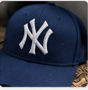
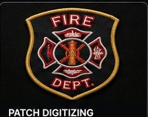
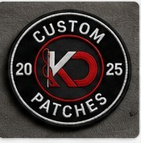
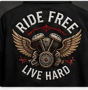
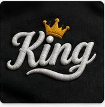

Short, practical write-ups on stitch density, file formats, and the small decisions that make a digitized file run clean.
A smaller file isn't automatically a cheaper or faster one. Here's how stitch count actually drives price, run time, and how a design will look once it's on fabric — and why two logos of the same size can cost very different amounts to digitize.
Read the post
How placement size changes the level of detail a digitized file can hold — and when to simplify a logo instead of shrinking it.

A walkthrough of curvature compensation and why a file built for a t-shirt won't stitch correctly on a structured cap.

A quick reference for the most common embroidery machine formats and which brands use which.
Foam density, underlay order, and the mistakes that make raised lettering collapse at the edges.

Why small text closes up on dense fabric, and the density adjustments that keep it legible.

How underlay and stitch sequencing hold a big jacket-back design flat across a full run.
Your first digitized file is free — see the quality before you commit.